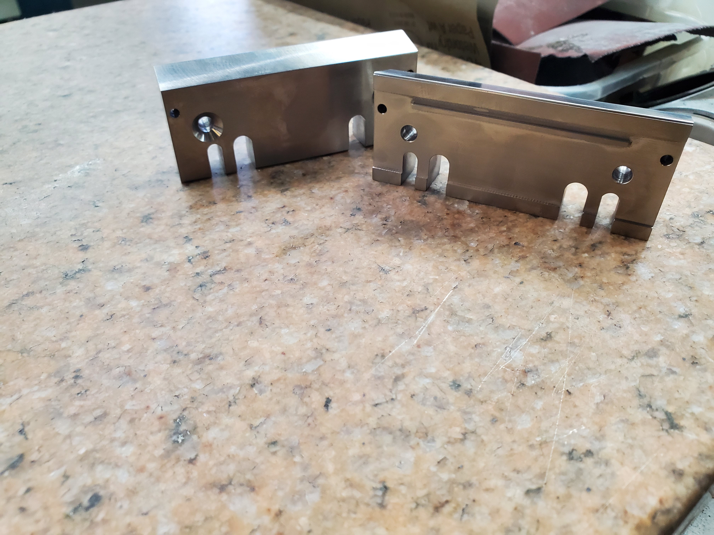
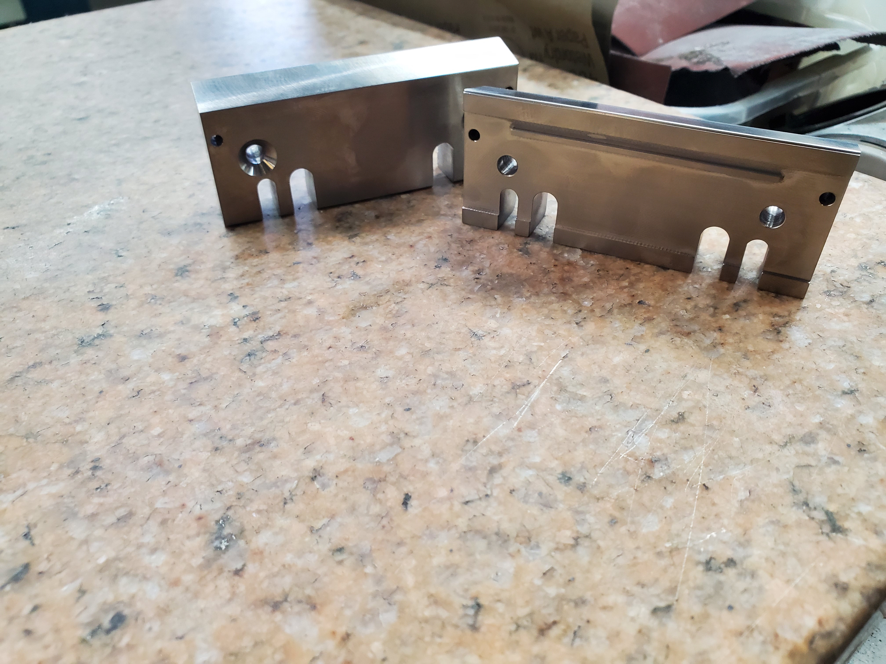


 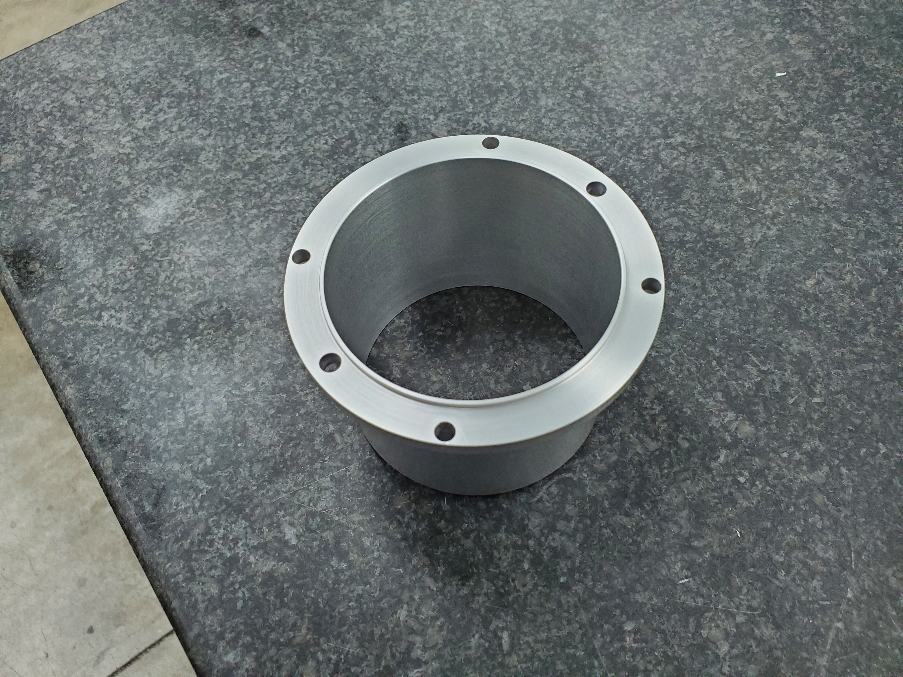
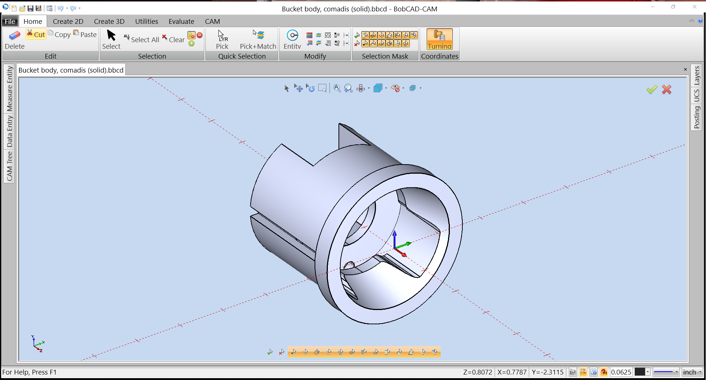
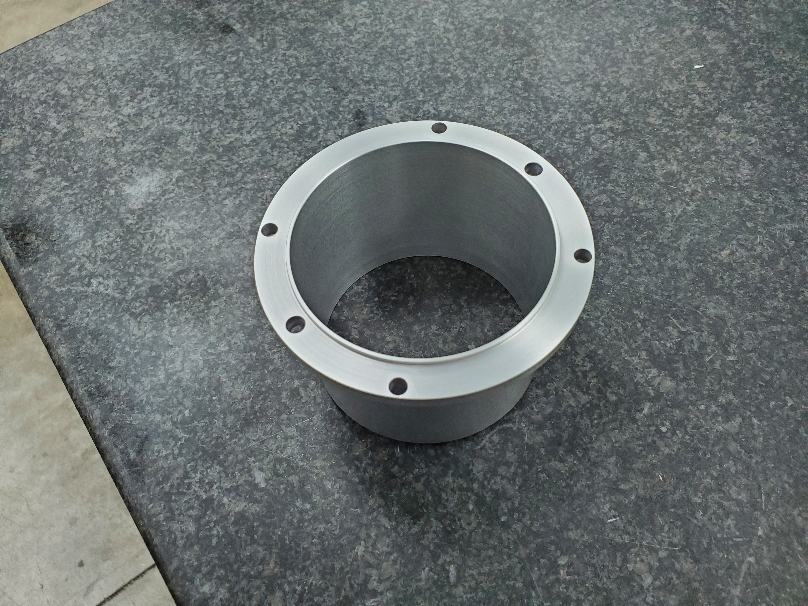
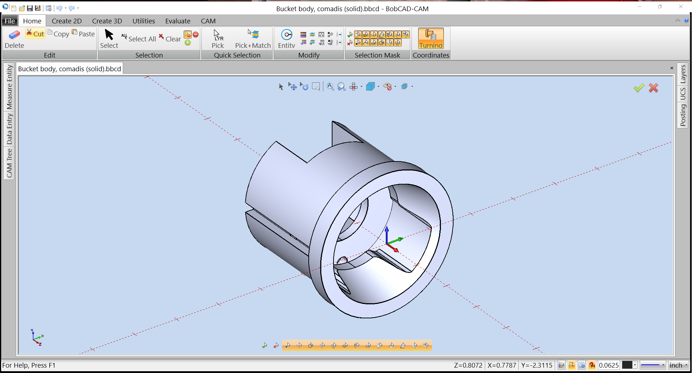

 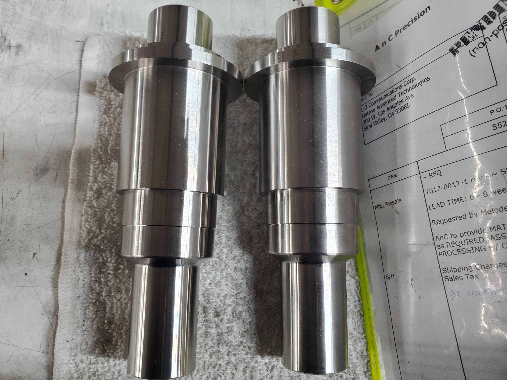
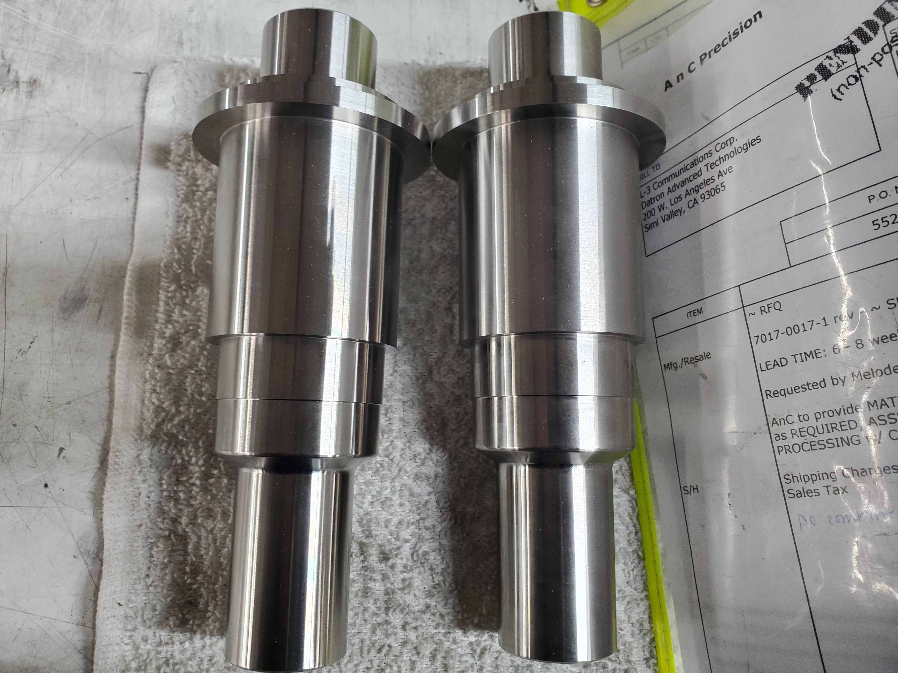
 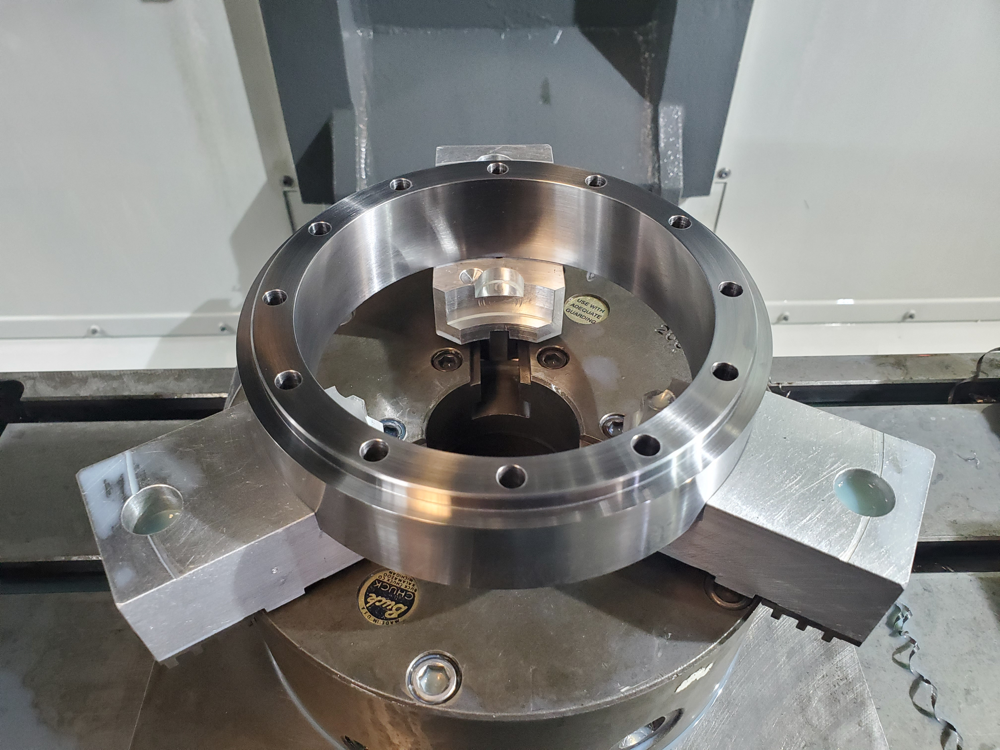
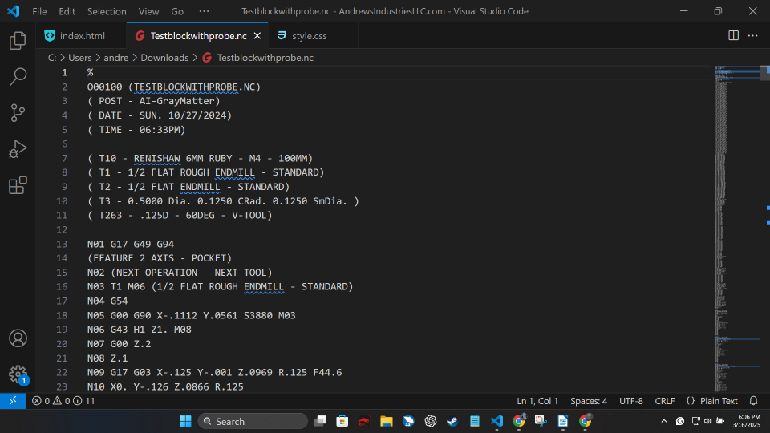
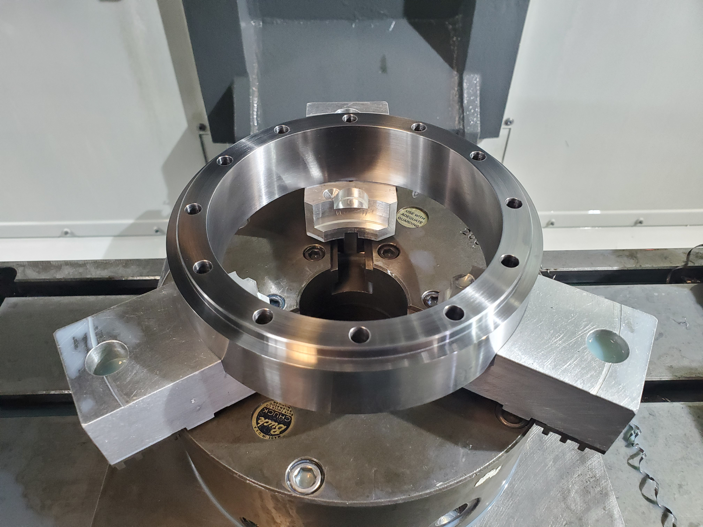
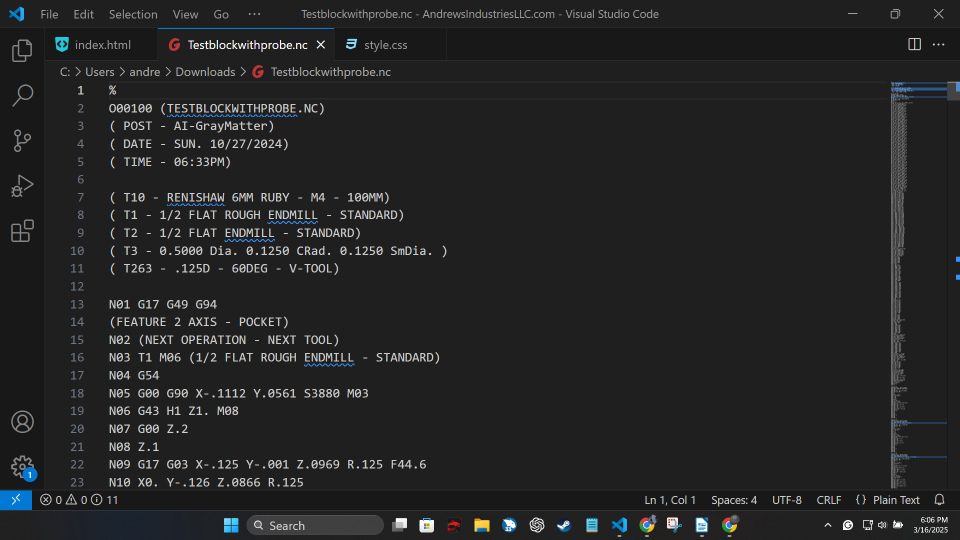

 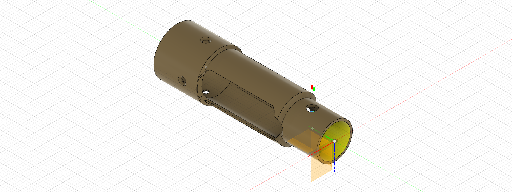
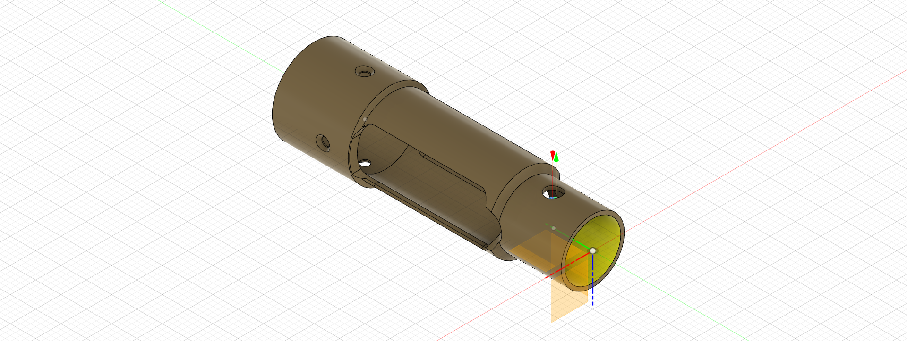
Service |
Detailed Description |
Key Technologies & Outputs |
CNC Programming & Optimization |
Development of custom G-code and M-code for complex, multi-axis CNC machining operations. We specialize in optimizing existing programs for reduced cycle times, improved tool life, and enhanced surface finish, directly impacting your bottom line. |
G-Code/M-Code, CAD/CAM Integration (e.g., Fusion 360, Mastercam), High-Efficiency Milling Paths |
3D Modeling & Design for Manufacturing (DfM) |
Transformation of client sketches, 2D drawings, or conceptual ideas into robust, manufacturable 3D solid models. We apply Design for Manufacturing (DfM) principles to ensure the model is optimized for its final process (CNC, 3D printing, or casting). |
Solid Modeling (e.g., SolidWorks, Inventor), Technical Drawings, STL/STEP/IGES Files |
Advanced 3D Printing |
High-resolution additive manufacturing for detailed parts and functional prototypes. We primarily use SLA/DLP resin printing for exceptional surface quality and intricate details, ideal for creating master patterns, jewelry, or detailed molds. |
SLA/DLP Resin Printing, High-Detail Polymers, Precision Master Patterns |
Custom Mold-Making & Tooling |
Design and fabrication of high-precision molds tailored for specific production methods (e.g., silicone, investment, injection). Our focus is on multi-use molds that deliver consistent, repeatable results with excellent surface finish and dimensional accuracy. |
CAD Mold Design, CNC-Machined Mold Inserts, Silicone RTV Molds |
Rapid Prototyping & Small-Batch Production |
Accelerated service for quick-turnaround production of custom parts. Leveraging in-house 3D printing and quick-cast methods, we move from design approval to physical part delivery in days, enabling fast design iteration and market validation. |
Fast Design-to-Part Cycle, Iterative Prototyping, Short-Run Manufacturing |
Custom Casting (Metal & Composite) |
High-quality casting services using proprietary processes for materials ranging from non-ferrous metals (e.g., brass, bronze, aluminum) to high-performance resins and composites. Ideal for industrial components, bespoke artistic pieces, and jewelry. |
Investment Casting Prep, Silicone/Urethane Casting, Custom Material Pigmentation |
Target Client |
Specific Needs We Address |
Value Proposition |
Machine Shops & Fabrication Facilities |
Custom code development and optimization for complex parts, especially on multi-axis equipment, to increase throughput and reduce scrap rates. |
Operational Efficiency: Faster, more reliable G-code to maximize machine uptime and profitability. |
Independent Engineers & Innovators (Garage Engineers) |
Need for affordable, custom small-batch rapid prototyping in functional materials to validate designs and secure patents. |
Innovation Accelerator: Low-volume production and quick-turn parts to rapidly test and perfect product designs. |
Artisanal Product Makers (Soap/Candle Makers, Confectioners) |
Requirement for complex, branded, and dimensionally perfect custom molds that mass-produced options cannot provide. |
Brand Differentiation: Unique, highly detailed molds that elevate product quality and market appeal. |
Jewelry Designers & Watchmakers |
Need for high-resolution resin patterns for investment casting and precise CNC work for intricate components. |
Detail & Finish: Ultra-fine detail models ready for the lost-wax casting process. |
Industrial Designers & Startups |
Complete support from conceptual 3D model through to the final small-batch production run. |
End-to-End Solution: Single vendor for DfM, prototyping, and initial production, simplifying the supply chain. |